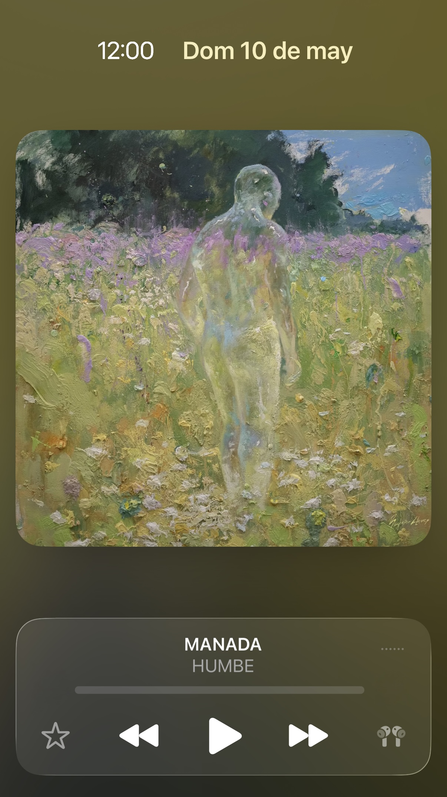
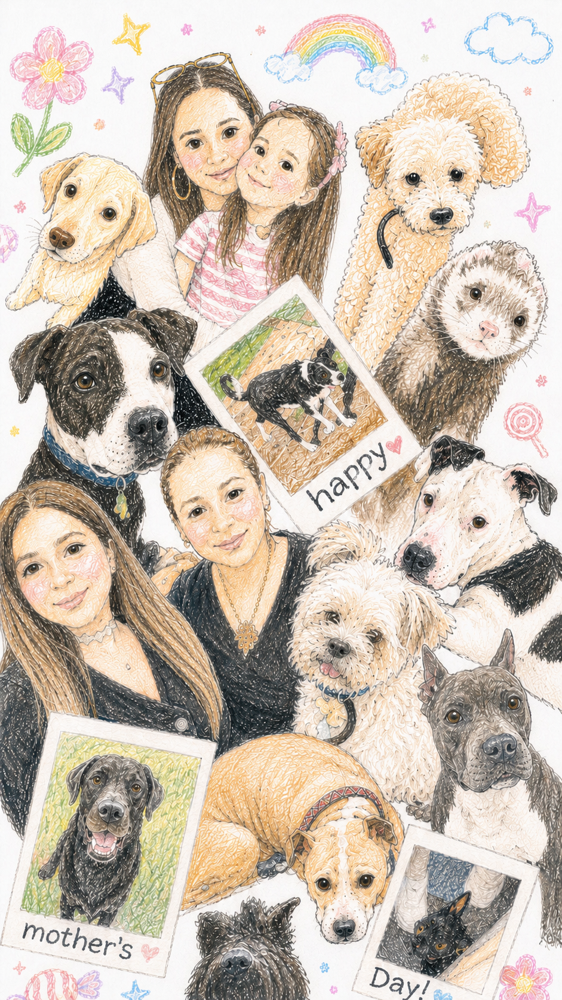

Dale clic al botón play para escuchar la canción
Cada que la Luna está aquí
Siento que te tengo cerca de mí
Aunque llegue a existir distancia entre nosotras, siempre te siento cerca; no podemos estar sin ti, siempre te extrañamos, pero somos afortunados de estar bajo la misma luna que tú, pero sobre todo tengo y tenemos el privilegio de llamarte “mamá”.
Por esas noches que ya pasaron
Porque aprendiste y te lastimaron
Pero estás aquí
Eres de la casa y parte de mí
Sé todo lo que viviste, todo lo que tuviste que soportar en tu vida, has sufrido y no lo mereces, a pesar de todo has salido adelante, eres fuerte, pero ahora queremos cuidar de ti, porque ya estás a salvo, somos tu familia, te amamos con toda el alma, queremos verte bien, que nunca más vuelvas a sufrir, saldremos adelante juntos.
Eres mi manada, confío en ti
Como tu energía viaja hasta aquí
Porque siento que esto es más que amor
Tú, mis hijos y yo somos uno solo, y no únicamente aquí en la tierra, si no en todos los planos, porque siempre estamos unidos sin importar los obstáculos, lo nuestro no es solo terrenal, nuestra conexión va más allá de lo que cualquier humano puede comprender.
Fuerza al corazón, arman mi valor
Parte de la casa, parte de mí
Antes que la vida, estás junto a mí
Solo buscas mi felicidad, siempre dar y nada esperar
Eres mi motor, son mi motor, son mi todo, mis ganas de vivir, por ustedes estoy aquí. Quiero que estemos juntos en esta y millones de vidas más. Quizá no lo recordamos, pero estoy segura que nos conocemos de antes, este vínculo no es convencional, es destinado. Vemos y valoramos todo lo que das por nosotros, quiero que sepas que yo doy la vida por ustedes, aunque no lo creas.
Tе aseguro que lo estás haciendo perfecto
Vaya talento, distinto elemento
Qué gran monumento
Haz lo que quieras pero hazlo por un sentimiento
Un juramento fiel a tu efecto
Eres una mujer admirable, la mejor mamá del mundo. La vida nos ha puesto muchos retos, es por ello que en ocasiones digo y hago cosas hirientes, me he equivocado mucho, pero créeme que en mi corazón las cosas son muy diferentes, todo es genuino, como mi amor por ti, además te admiro, de hecho te admiraré en todos los universos; gracias por todo Yarely, por tus sacrificios, por tu apoyo incondicional, porque todo lo que ofreces es de corazón y eso te hace diferente a todos en este mundo, eres buena y nosotros lo valoramos; nunca te rindas, no dejes de creer en ti, esta manada sin ti es nada, tú eres nuestra guía y fortaleza. Tampoco olvides que eres auténtica, hermosa y muy muy inteligente, sé fiel a ti, nunca dejes que alguien corte tus alas, tampoco lo hagas tú, porque eres más que valiosa, cuídate, crece, no dejes que tu “muchosidad” deje de existir, el mundo necesita personas como tú, haz todo desde el corazón y no te dejes de nadie, incluso de mi.
Me haces sentir que estoy completo
Que acabé el trayecto, que ya tengo un amuleto
Por primera vez yo siento voy en el carril correcto
Mi esencia va desnuda, ves mis defectos
Bonito y perfecto, divino y expuesto por ti
Por ti, por ti, por ti
Mamá, eres mi lugar seguro, mi estabilidad, estoy orgullosa de ti, también deberías estarlo, ve todo lo que has logrado, y puedes lograr aún más, nosotros te apoyamos, recuerda que la vida no es una competencia, todos vamos a nuestro ritmo y eso siempre estará bien, nunca es tarde, por cierto, no te arrepientas de nada, todo fue para aprender y crecer. Gracias por siempre estar a mi lado, por hacerme sentir valorada, escuchada, por animarme y sobre todo por guiarme y ser un gran ejemplo para mí. No soy perfecta y nunca lo seré, pero ten por seguro que siempre estoy trabajando en mi para mejorar, perdóname por todas esas veces en las que me equivoqué; a pesar de mis errores siempre te quedas con lo mejor de mi y me ayudas a ser mejor, soy lo que soy gracias a ti, a ustedes, eres la mejor mamá, eres una gran mujer.
Eres mi manada, confío en ti
Como tu energía viaja hasta aquí
Porque siento que esto es más que amor
Fuerza al corazón, arman mi valor
Parte de la casa, parte de mí
Antes que la vida, estás frente a mí
Solo buscas mi felicidad, siempre dar y nada esperar
Estamos conectados en cuerpo y alma. Sanemos el pasado, aún nos queda mucho por recorrer, pero esta vez será diferente, será mil veces mejor y sobre todo juntos. Eres pura y genuina, eres increíble, nunca lo olvides mamá, gracias por traer felicidad a mi vida y a la de mis hijos.
Y yo doy las gracias por ti
Guardaste mi alma y mi esencia segura en tu corazón
Le diste sentido a este mundo que no tenía nada
No tenía nada
Ya no era nada
(y ahora estás aquí)
Gracias por siempre protegernos, por darle sentido a mi mundo, nuestro mundo; esta parte de la canción es literal. Te amamos: mis hijos del cielo, mis hijos presentes y yo.
